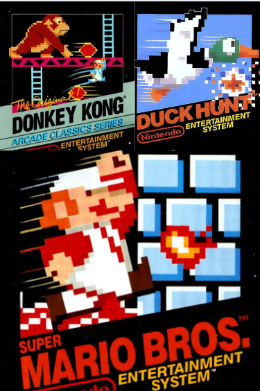

My Journey into Gaming: How the NES and Class Games Shaped My Love for Play
My journey into gaming began when I was 10 years old, thanks to my cousin who gifted us our very first NES console. It was the start of an adventure that would shape not just my childhood but my perspective on games and fun forever. Those early days were filled with excitement as I discovered the magic of classic games. Here are my top three:

- Super Mario Bros. was more than just entertainment; it was a world where I could be a hero, jumping through colorful levels, dodging enemies, and saving Princess Peach. The simple mechanics and catchy tunes made every moment feel like an accomplishment, and even today, the sound of Mario collecting a coin brings a smile to my face.
- Donkey Kong was a thrilling challenge of climbing platforms, avoiding barrels, and outsmarting a pixelated ape. Every level cleared came with a fist-pump moment. The tight controls and addictive gameplay loop taught me patience, timing, and the rush of perseverance paying off.
- Duck Hunt transformed our living room into a shooting gallery. With the NES Zapper in hand, I spent countless afternoons trying to perfect my aim, sometimes even dodging my own imaginary bullets as if it would help. The simple act of shooting ducks and laughing (or groaning) at the dog's taunts when I missed became a family pastime that none of us forgot.
These classic games weren't just pixels on a screen; they were the foundation of my love for gaming. They taught me about problem-solving, quick reflexes, and the pure fun of playing just for the joy of it. Even now, as I look back, I realize how these games set the stage for a lifelong passion that still brings me happiness. What games sparked your love for gaming? Let's celebrate those moments that started it all!